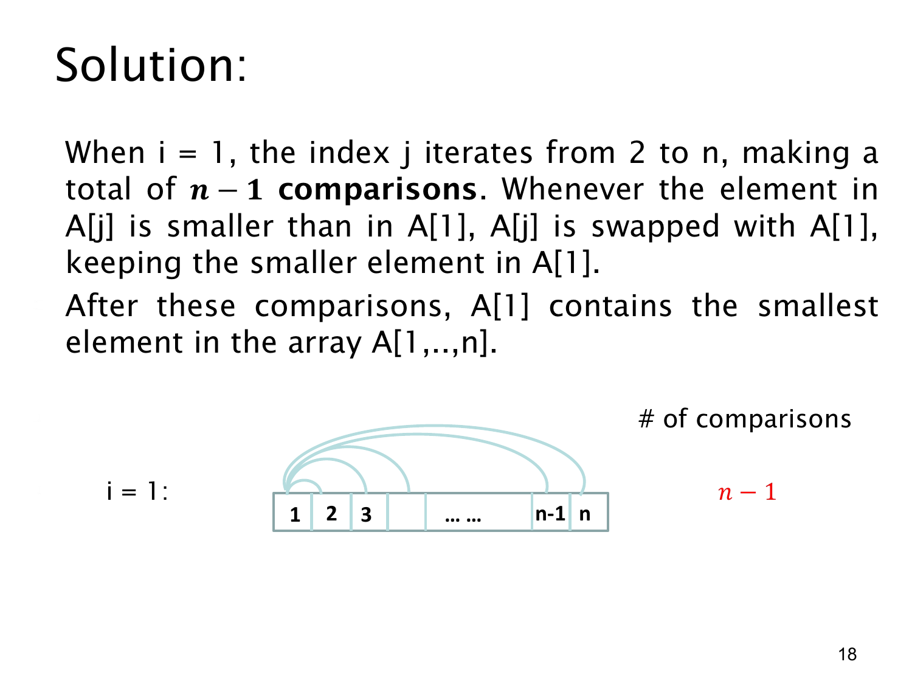

课件第 18 页讲解原文
查看这一页课件

排序的第一轮：把最小值留在第一个位置
这一页只看外层循环的第一轮，即 i=1。内层变量 j 从 2 到 n，所以位置 1 要依次和后面的每个位置比较。
图中的小方格标的是数组位置，不是数组里存放的数值。浅蓝色弧线从位置 1 连到位置 2、3，直到位置 n；每条线代表一次比较，一共有 n−1 条。
当发现 A[j] 比当前 A[1] 更小时，就交换两者，使较小的值留在 A[1]。所以扫描到哪里，A[1] 就保存到目前为止看见的最小值。
例如开始时数组是 [5,3,4,1]：
- 比较 5 和 3，交换后得到 [3,5,4,1]。
- 比较当前位置 1 的 3 和位置 3 的 4，不交换。
- 比较 3 和位置 4 的 1，交换后得到 [1,5,4,3]。
第一轮结束后，最小值 1 已经在位置 1；后面的部分还不一定排好。
无论具体数据怎样，这一轮都必须检查位置 2,3,…,n，比较次数固定为：
n−2+1=n−1.
例子中比较了 3 次，只交换了 2 次。课件右侧的 n−1 数的是比较，而非交换。理解“每条弧线就是一次比较”，就能把程序循环与图上的计数对应起来。